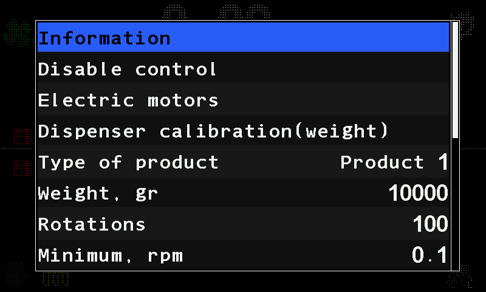

Dosierer-Elektromotor
Die Parameter eines elektrischen Dosiermotors — Löcher in der Scheibe, Übersetzung, Drehrichtung, Rücklauf bei Blockade, Produkt, Kalibrierwerte, Drehzahlfenster und Kalibriertaste — mit Bereichen, Standardwerten und dem Zeitpunkt, zu dem jeder angezeigt wird.
Ein Elektromotor treibt einen Dosierer mit der Drehzahl an, die das Panel aus Sollmenge und Fahrgeschwindigkeit berechnet. Berühren und halten Sie seine Kachel auf dem Motorbildschirm oder dem zweiten Startbildschirm, um sein Kontextmenü zu öffnen (Sensoreinstellungen).

Welche Punkte Sie sehen, hängt vom Modus seiner Gruppe ab: Ein Motor einer Gruppe im Modus „Precise“ (Einzelkorn) treibt eine Saatscheibe an; in „Flow“ (Durchfluss) oder „Hybrid“ (Hybrid) dosiert er ein Produkt nach Gewicht.
| Parameter | Was er tut | Bereich, Standard | Ebene |
|---|---|---|---|
| „Holes in disk“ (Löcher in der Scheibe) | Die Anzahl der Löcher in der Saatscheibe. Nur im Modus „Precise“. | 1 … 200; 27 | Operator |
| „Numerator“ (Zähler) / „Denominator“ (Nenner) | Zusammen: die Übersetzung zwischen Motor und Dosierwelle. | je 1 … 500; 10 / 10 | Agronomist |
| „Rotation direction“ (Drehrichtung) | Die Richtung, in die sich der Motor dreht. | „Forward“ (Vorwärts) / „Backward“ (Rückwärts); „Forward“ | Agronomist |
| „Start delay,mS“ (Startverzögerung, ms) | Die kürzeste Zeit in Millisekunden zwischen den Starts zweier Motoren, damit nicht alle zugleich anlaufen. | 0 … 500, Schritte von 5; 30 | Service |
| „Section control D.I.“ (Sektionssteuerung, digitaler Eingang) | Ein Eingang des Controllers, der die Sektion abschaltet: „Shut off(0)“ (Abschalten bei 0), wenn der Eingang 0 liest, „Shut off(1)“, wenn er 1 liest. | „No“ (Nein) / „Shut off(0)“ / „Shut off(1)“; „No“ | Agronomist |
| „Rollback when jammed“ (Rücklauf bei Blockade) | „Yes“ (Ja) — blockiert der Rotor, dreht der Motor einen Moment rückwärts, statt nur anzuhalten. | „No“ / „Yes“; „No“ | Agronomist |
| „Group start address“ (Startadresse der Gruppe) | Wird bei der Inbetriebnahme eingestellt — siehe Motorcontroller konfigurieren. | — | Agronomist |
In den Modi „Flow“ und „Hybrid“ enthält das Menü zusätzlich:
| Parameter | Was er tut | Bereich, Standard | Ebene |
|---|---|---|---|
| „Dispenser calibration(weight)“ (Dosiererkalibrierung nach Gewicht) | Startet die Kalibrierung nach Gewicht. Wird nur angezeigt, solange die Maschine steht. Dosierermotor nach Gewicht kalibrieren | — | Operator |
| „Type of product“ (Produktart) | Welches der vier Produkte dieser Motor dosiert. | „Product 1“ … „Product 4“ (Produkt 1 … 4) | Agronomist |
| „Weight, gr“ (Gewicht, g) / „Rotations“ (Umdrehungen) | Beide werden durch die Kalibrierung nach Gewicht eingestellt. Zahlenfeld. | je 1 … 65535; 10000 / 100 | Agronomist |
| „Minimum, rpm“ (Minimum, U/min) / „Maximum, rpm“ (Maximum, U/min) | Das Drehzahlfenster, das die Mengenregelung nutzen darf, mit einer Nachkommastelle. Zahlenfeld. | je 0,1 … 500,0; 0,1 / 500,0 | Agronomist |
| „Button input“ (Tasteneingang) | Der Eingang des Motorcontrollers, der als Kalibriertaste dient; „No“ — keiner. | „No“, 1 … 3; „No“ | Agronomist |
| „Activation signal“ (Aktivierungssignal) | Welcher Zustand dieses Eingangs als gedrückt gilt. | 0 / 1; 1 | Agronomist |
„Minimum, rpm“ und „Maximum, rpm“ sind keine Sicherheitsgrenze, sondern das Fenster, in dem die Mengenregelung arbeitet. Das Geschwindigkeitsfenster auf dem Kalibrierbildschirm wird daraus zusammen mit den Walzenwerten berechnet. „Button input“ und „Activation signal“ erlauben es einer einzelnen Person, den Motor während der Kalibrierung am Dosierer zu bedienen — siehe Dosierermotor nach Gewicht kalibrieren.
Der Statusbildschirm zeigt „Working“ (in Betrieb) oder „Faulty“ (gestört) und den letzten Fehlercode (Fehlercode eines Elektromotors lesen). Alarme: Alarme der Dosiermotoren, Dosierung nach Gewicht. Der Controller selbst wird in Motorcontroller konfigurieren eingerichtet.
Ihre Maschine tut etwas, das diese Seite nicht beantwortet? Schreiben Sie an support@agriwelt.com — es antwortet ein Ingenieur.